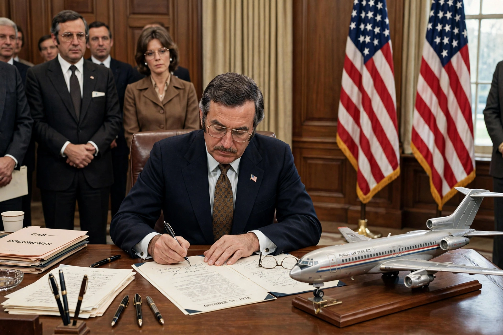

Airline Deregulation Act

| Airline Deregulation Act | |
|---|---|
| Enacted | 24 October 1978 |
| Signed by | President Jimmy Carter |
| Effect | Removed federal control over fares, routes and market entry for U.S. airlines |
| Abolished | Civil Aeronautics Board (sunset 1 January 1985) |
The Airline Deregulation Act is a 1978 United States federal law that deregulated the airline industry in the United States, removing federal government control over such areas as fares, routes and market entry of new airlines. It introduced a free market in the commercial air transportation industry, leading to a great increase in the number of flights, a decrease in fares, and an increase in the number of passengers and miles flown.
Background
From 1938 the Civil Aeronautics Board (CAB) had tightly regulated interstate air travel as a public utility: it awarded routes, set fares and had not certificated a single new trunk airline in four decades. Critics across the political spectrum blamed regulation for high fares and inefficiency, pointing to cheaper intrastate services in California and Texas that escaped CAB control. Economist Alfred E. Kahn, appointed CAB chairman by President Jimmy Carter in 1977, drove administrative deregulation, while Senator Edward Kennedy's hearings built the legislative case, supported by consumer advocates and the administration of Gerald Ford before Carter.
Provisions and effects
The Act phased out the CAB's authority over routes and fares, placed the burden of proof on those opposing new services to show they were inconsistent with the public interest, and provided for the Board's abolition in 1985, with safety regulation remaining with the Federal Aviation Administration. The results transformed the industry: new low-cost carriers entered, existing airlines adopted hub-and-spoke networks, real fares fell substantially over the following decades, and passenger numbers soared. The period also brought bankruptcies, consolidation into a handful of large carriers, labour strife and the decline of famous names such as Pan Am, Eastern and TWA. Deregulation in the U.S. served as a model for liberalisation of air transport in Europe and elsewhere.
See also: Deregulation · Low-cost carrier · Hub and spoke · Alfred E. Kahn